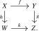
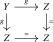
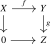
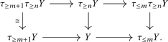

In Section 6.1, we saw that the derived \(\infty \)-category \(\D (\Aa )\) of an abelian category \(\Aa \) admits a natural decomposition into ‘connective’ and ‘coconnective’ parts. Specifically, a complex \(A \in \D (\Aa )\) is called connective if its homology vanishes in negative degrees, and coconnective if its homology vanishes in positive degrees. These two classes of objects interact in a structured way:
- (1)
-
(Closure under shifts) Connective complexes are closed under positive shifts, while coconnective complexes are closed under negative shifts.
- (2)
-
(Orthogonality) There are no nonzero maps from a connective complex to a \((-1)\)-coconnective complex.
- (3)
-
(Decomposition) Every complex \(A\) sits in an exact sequence \(\tau _{\geq 0} A \to A \to \tau _{\leq -1} A\) decomposing it into a connective and a \((-1)\)-coconnective part.
The \(\infty \)-category \(\Sp \) of spectra exhibits the same pattern: a spectrum \(X\) is called connective if \(\pi _k(X) = 0\) for \(k < 0\), and coconnective if \(\pi _k(X) = 0\) for \(k > 0\). These subcategories again satisfy properties (1)–(3).
Structures like these are omnipresent in stable homotopy theory and homological algebra. The axiomatic framework capturing this phenomenon is that of a t-structure on a stable \(\infty \)-category, introduced by Beĭlinson, Bernstein, and Deligne [Beilinson et al. (1982)]. One of the key features of a t-structure is its heart: the full subcategory of objects that are both connective and coconnective. The heart turns out to be an abelian 1-category, providing a bridge between the stable and abelian worlds. This allows many arguments from classical homological algebra to be carried out in any stable \(\infty \)-category equipped with a t-structure, even when that category does not arise as the derived category of an abelian category.
In Subsection 6.3.1 we give the definition of a t-structure and establish its basic properties, including the existence of truncation functors. In Subsection 6.3.2 we prove that the heart of a t-structure is an abelian category, and relate exact sequences in \(C\) to short exact sequences in the heart. In Subsection 6.3.3 we introduce homotopy group objects and establish the long exact sequence of homotopy groups. Finally, in Subsection 6.3.4 we discuss completeness and boundedness conditions that control how well objects are determined by their truncations.
6.3.1 Definition and basic properties
Definition 6.3.1 ([Beilinson et al. (1982)]). A t-structure on a stable \(\infty \)-category \(C\) consists of a pair \((C_{\geq 0}, C_{\leq 0})\) of full subcategories of \(C\) satisfying the following conditions:
- (1)
-
(Closure under shifts) We have \(C_{\geq 0}[1] \subseteq C_{\geq 0}\) and \(C_{\leq 0}[-1] \subseteq C_{\leq 0}\).
- (2)
-
(Orthogonality) If \(X \in C_{\geq 0}\) and \(Y \in C_{\leq 0}\), then \(\Hom _{C}(X,Y[-1]) = 0\).
- (3)
-
(Decomposition) Every \(X \in C\) sits in an exact sequence of the form \begin {align*} \tau _{\geq 0} X \to X \to \tau _{\leq -1} X, \end {align*}
with \(\tau _{\geq 0} X \in C_{\geq 0}\) and \(\tau _{\leq -1} X \in C_{\leq 0}[-1]\).
Objects in \(C_{\geq 0}\) are called connective (with respect to the t-structure), while objects in \(C_{\leq 0}\) are called coconnective. For \(n \in \Z \) we set \(C_{\geq n} := C_{\geq 0}[n]\) and \(C_{\leq n} := C_{\leq 0}[n]\).
If \(D\) is another stable \(\infty \)-category equipped with a t-structure, then an exact functor \(F\colon C \to D\) is called left t-exact if it sends \(C_{\leq 0}\) to \(D_{\leq 0}\), and hence by exactness sends \(C_{\leq n}\) to \(D_{\leq n}\) for all \(n \in \Z \). Similarly, \(F\) is called right t-exact if it sends \(C_{\geq 0}\) to \(D_{\geq 0}\), or equivalently sends \(C_{\geq n}\) to \(D_{\geq n}\) for all \(n\). We say \(F\) is t-exact if it is both left and right t-exact.
Remark 6.3.2 (Cohomological grading). We index t-structures homologically, matching our convention for chain complexes (Remark 6.1.8). A reader preferring cohomological grading should negate the index throughout, writing \(C^{\geq n} := C_{\leq -n}\) and \(C^{\leq n} := C_{\geq -n}\), and likewise \(\tau ^{\geq n} := \tau _{\leq -n}\) and \(\tau ^{\leq n} := \tau _{\geq -n}\) for the truncation functors introduced below.
The two main examples of t-structures are the standard t-structure on derived categories and the Postnikov t-structure on spectra.
Proposition 6.3.3 (Standard t-structure on derived categories). Let \(\Aa \) be an abelian category. The pair \((\D (\Aa )_{\geq 0}, \D (\Aa )_{\leq 0})\) defines a t-structure on \(\D (\Aa )\), called the standard t-structure.
Proof. Property (1) is immediate from the definition of \(\D (\Aa )_{\geq n}\) and \(\D (\Aa )_{\leq n}\): a complex with homology concentrated in degrees \(\geq 0\) has, after a positive shift, homology concentrated in degrees \(\geq 1\), so in particular \(\geq 0\).
Property (2) was established in Corollary 6.1.25: if \(A\) is connective and \(B\) is \((- 1)\)-coconnective, then \(\Hom _{\D (\Aa )}(A,B) = 0\).
Property (3) is Corollary 6.1.32: for every complex \(A\), there is an exact sequence \(\tau _{\geq 0} A \to A \to \tau _{\leq -1} A\) in \(\D (\Aa )\). □
Proposition 6.3.4 (Postnikov t-structure on spectra). Define \(\Sp _{\geq 0} \subseteq \Sp \) to be the full subcategory of connective spectra, i.e. those \(X\) with \(\pi _k(X) = 0\) for \(k < 0\), and \(\Sp _{\leq 0} \subseteq \Sp \) the full subcategory of coconnective spectra, i.e. those with \(\pi _k(X) = 0\) for \(k > 0\). Then the pair \((\Sp _{\geq 0}, \Sp _{\leq 0})\) defines a t-structure on \(\Sp \), called the Postnikov t-structure.
Proof. Property (1) is immediate from the behavior of homotopy groups under shifts: \(\pi _k(X[1]) \cong \pi _{k-1}(X)\).
For property (2), let \(X \in \Sp _{\geq 0}\) and \(Y \in \Sp _{\leq 0}\). By the recognition principle for connective spectra (Theorem 5.4.6), we may write \(X \simeq \bB ^{\infty }(A)\) for some \(A \in \CGrp (\An )\). By adjunction, \[ \Hom _{\Sp }(X, Y[-1]) \quad \cong \quad \Hom _{\CGrp (\An )}(A, \Omega ^{\infty }(Y[-1])). \] But \(\Omega ^{\infty }(Y[-1])\) is contractible: its homotopy groups \(\pi _k(\Omega ^{\infty }(Y[-1])) \cong \pi _k(Y[-1]) \cong \pi _{k+1}(Y)\) vanish for all \(k \geq 0\) since \(Y \in \Sp _{\leq 0}\).
For property (3), given a spectrum \(X\), we define \(\tau _{\geq 0} X := \bB ^{\infty }\Omega ^{\infty }X\). The counit of the adjunction \(\bB ^{\infty } \dashv \Omega ^{\infty }\) provides a map \(\tau _{\geq 0} X \to X\). Define \(\tau _{\leq -1} X\) as its cofiber. From the long exact sequence on homotopy groups (Proposition 4.4.29), one verifies that \(\tau _{\geq 0} X\) is connective and \(\tau _{\leq -1} X\) has homotopy groups concentrated in degrees \(\leq -1\). □
Example 6.3.5. If \(C\) admits a t-structure \((C_{\geq 0}, C_{\leq 0})\), then \(C\catop \) can be given the opposite t-structure, in which \((C\catop )_{\geq 0} := (C_{\leq 0})\catop \) and \((C\catop )_{\leq 0} := (C_{\geq 0})\catop \).
Example 6.3.6. If \(C\) and \(D\) both admit t-structures, then so does their product \(C \times D\) by setting \((C \times D)_{\geq 0} := C_{\geq 0} \times D_{\geq 0}\) and \((C \times D)_{\leq 0} := C_{\leq 0} \times D_{\leq 0}\).
We now show that the objects \(\tau _{\geq 0} X\) and \(\tau _{\leq -1} X\) appearing in axiom (3) are in fact functorial in \(X\), arising from adjunctions.
Lemma 6.3.7. Let \((C_{\geq 0}, C_{\leq 0})\) be a t-structure on \(C\), and let \(n \in \Z \).
- (1)
-
The inclusion \(C_{\geq n} \hookrightarrow C\) admits a right adjoint \(\tau _{\geq n}\colon C \to C_{\geq n}\).
- (2)
-
The inclusion \(C_{\leq n} \hookrightarrow C\) admits a left adjoint \(\tau _{\leq n}\colon C \to C_{\leq n}\).
Proof. We prove (1); the proof of (2) is dual. By shifting, we may assume that \(n = 0\); in general we may then set \(\tau _{\geq n}(X) := \tau _{\geq 0}(X[-n])[n]\). Using the pointwise formula for adjunctions, it suffices to show that for every object \(X \in C\) there exists some \(\tau _{\geq 0}X\) equipped with a morphism \(\tau _{\geq 0}X \to X\) inducing equivalences \(\Hom _{C}(Y, \tau _{\geq 0}X) \iso \Hom _{C}(Y,X)\) for every \(Y \in C_{\geq 0}\). For this, we consider the exact sequence \(\tau _{\geq 0}X \to X \to \tau _{\leq -1}X\) provided by axiom (3). This gives rise to a long exact sequence \[ \dots \to \pi _{n+1}\Hom _C(Y,\tau _{\leq -1} X) \to \pi _n\Hom _C(Y,\tau _{\geq 0}X) \to \pi _n \Hom _C(Y,X) \to \pi _n\Hom _C(Y,\tau _{\leq -1} X) \to \dots \] Since \(\Hom _C(Y,\tau _{\leq -1} X) = 0\) by axiom (2), this implies that the map \(\Hom _{C}(Y, \tau _{\geq 0}X) \to \Hom _{C}(Y,X)\) induces isomorphisms on all homotopy groups, hence is an equivalence. □
Corollary 6.3.8. The subcategory \(C_{\leq n}\) of \(C\) is closed under all limits that exist in \(C\). The subcategory \(C_{\geq n}\) of \(C\) is closed under all colimits that exist in \(C\). □
Corollary 6.3.9. Assume \(C\) admits \(I\)-indexed colimits. Then so does the subcategory \(C_{\leq n}\): they are computed as \(\tau _{\leq n}(\colim _{i \in I} X_i)\). Dually, if \(C\) admits \(I\)-indexed limits, then so does \(C_{\geq n}\) via the formula \(\tau _{\geq n}(\lim _{i \in I} X_i)\). □
Lemma 6.3.10. Let \(C\) be a stable \(\infty \)-category equipped with a t-structure, and let \(n,m \in \Z \).
- (1)
-
If \(X \in C_{\leq m}\), then \(\tau _{\geq n}X \in C_{\leq m}\).
- (2)
-
If \(X \in C_{\geq n}\), then \(\tau _{\leq m}X \in C_{\geq n}\).
Proof. We prove (1) first. Let \(X \in C_{\leq m}\). If \(n>m\), then \(\Hom _C(Z,X)=0\) for every \(Z \in C_{\geq n}\) by orthogonality. By adjunction, this gives \(\Hom _C(Z,\tau _{\geq n}X)=0\) for every \(Z \in C_{\geq n}\). Taking \(Z=\tau _{\geq n}X\), we see that the identity of \(\tau _{\geq n}X\) is null, so \(\tau _{\geq n}X\) is zero.
Assume instead that \(n \leq m\). The truncation sequence \[ \tau _{\geq n}X \to X \to \tau _{\leq n-1}X \] exhibits \(\tau _{\geq n}X\) as the fiber of a morphism between objects of \(C_{\leq m}\), since \(C_{\leq n-1} \subseteq C_{\leq m}\). By Corollary 6.3.8, it follows that \(\tau _{\geq n}X \in C_{\leq m}\).
The proof of (2) is dual. □
Warning 6.3.11. The notation \(\tau _{\leq n}\) is sometimes also used for the notion of \(n\)-truncation in an \(\infty \)-category. This notation is not compatible with the left adjoint \(\tau _{\leq n}\) from the lemma. In fact, the only \(n\)-truncated object in a stable \(\infty \)-category is the zero object. (Compare Lemma 6.3.18.)
Exercise 6.3.12. Let \(C\) and \(D\) have t-structures and let \(F \colon C \rightleftarrows D \noloc G\) be an adjunction. Show that \(F\) is right t-exact if and only if \(G\) is left t-exact.
Lemma 6.3.13. Let \(F\colon C \to D\) be a t-exact functor between two stable \(\infty \)-categories equipped with t-structures. Then for all \(X \in C\) and \(n \in \Z \), there are natural equivalences \[ \tau _{\leq n} F(X) \iso F(\tau _{\leq n} X) \qquadtext { and } F(\tau _{\geq n} X) \iso \tau _{\geq n} F(X). \]
Proof. We prove the first equivalence; the second is dual. Since \(F\) is t-exact, applying \(F\) to the exact sequence \(\tau _{\geq n+1} X \to X \to \tau _{\leq n} X\) gives another exact sequence \[ F(\tau _{\geq n+1} X) \to F(X) \to F(\tau _{\leq n} X) \] where the first object lies in \(D_{\geq n+1}\) and the last one in \(D_{\leq n}\). It follows that the second map induces an isomorphism \(\tau _{\leq n} F(X) \iso F(\tau _{\leq n} X)\). □
6.3.2 The heart of a t-structure
Given a t-structure on \(C\), a special role is played by the objects that are both connective and coconnective.
Definition 6.3.14. Let \((C_{\geq 0}, C_{\leq 0})\) be a t-structure on \(C\). We define the heart of the t-structure to be the intersection \[ C^{\heartsuit } := C_{\geq 0} \cap C_{\leq 0}. \]
The key feature of t-structures is that the heart is always an abelian 1-category, and that there is a close relation between exact sequences in \(C^{\heartsuit }\) (in the sense of homological algebra) and exact sequences in \(C\) (in the sense of stable homotopy theory).
Proposition 6.3.15. Let \(C\) be a stable \(\infty \)-category equipped with a t-structure.
- (1)
-
The heart \(C^{\heartsuit }\) is an abelian 1-category.
- (2)
-
A morphism \(g\colon Y \to Z\) in \(C^{\heartsuit }\) is an epimorphism in \(C^{\heartsuit }\) if and only if its fiber in \(C\) lies in \(C^{\heartsuit }\).
- (3)
-
A morphism \(f\colon X \to Y\) in \(C^{\heartsuit }\) is a monomorphism in \(C^{\heartsuit }\) if and only if its cofiber in \(C\) lies in \(C^{\heartsuit }\).
- (4)
-
Consider a commutative square in \(C^{\heartsuit }\) of the form

- (a)
-
If \(g\) and \(h\) are epimorphisms in \(C^{\heartsuit }\), then the square is a pullback square in \(C^{\heartsuit }\) if and only if it is a pullback square in \(C\).
- (b)
-
If \(f\) and \(k\) are monomorphisms in \(C^{\heartsuit }\), then the square is a pushout square in \(C^{\heartsuit }\) if and only if it is a pushout square in \(C\).
Proof. For (1), first observe that \(C^{\heartsuit }\) is a 1-category, in the sense that the hom animae \(\Hom _{C^{\heartsuit }}(X,Y)\) are sets. Indeed, for \(k \geq 1\), we have \[ \pi _k\Hom _{C^{\heartsuit }}(X,Y) \cong \pi _0 \Hom _{C}(X,Y[-k]) = 0 \] since \(X \in C_{\geq 0}\) and \(Y[-k] \in C_{\leq -k} \subseteq C_{\leq -1}\). Further, since both \(C_{\leq 0}\) and \(C_{\geq 0}\) are closed under direct sums in \(C\), it is clear \(C^{\heartsuit }\) is additive. We also observe that \(C^{\heartsuit }\) admits kernels and cokernels, which are computed as \[ \ker (Y \to Z) = \tau _{\geq 0}(\fib (Y \to Z)) \qquadtext { and } \coker (X \to Y) = \tau _{\leq 0}(\cofib (X \to Y)). \] Before finishing the proof of (1), let us first address the ‘only if’-directions in (2) and (3). Since replacing \(C\) by \(C\catop \) translates (2) into (3) and vice versa, it suffices to prove the ‘only if’-direction in (2). To this end, let \(g\colon Y \twoheadrightarrow Z\) be an epimorphism in \(C^{\heartsuit }\). We need to show that \(\fib (g) \in C_{\geq 0}\). (Since \(C_{\leq 0}\) is closed under limits, the condition \(\fib (g) \in C_{\leq 0}\) is automatic.) The assumption on \(g\) implies that the commutative square

is a pushout square in \(C^{\heartsuit }\). Since pushouts in \(C^{\heartsuit }\) are computed by first forming the pushout in \(C_{\geq 0}\) and then applying \(\tau _{\leq 0} \colon C_{\geq 0} \to C^{\heartsuit }\), it follows that the map \(Z \to Z \sqcup _Y Z\) obtained by forming the pushout in \(C\) induces an isomorphism \(Z = \tau _{\leq 0} Z \iso \tau _{\leq 0}(Z \sqcup _Y Z)\). Passing to cofibers then gives \(\tau _{\leq 0}(\cofib (g)) = 0\), or equivalently \(\cofib (g) \in C_{\geq 1}\). But then the relation \(\fib (g) \simeq \cofib (g)[-1]\) implies \(\fib (g) \in C_{\geq 0}\), which is what we needed to show.
We now prove (4). Again, (a) translates to (b) under replacing \(C\) by \(C\catop \), so it suffices to prove (a). By full faithfulness of the inclusion \(C^{\heartsuit } \hookrightarrow C\), it is clear that if the square is a pullback in \(C\) then it is also a pullback in \(C^{\heartsuit }\). Conversely, if the square is a pullback in \(C^{\heartsuit }\), then it in particular induces an isomorphism \(\ker (h) \iso \ker (g)\) on kernels in \(C^{\heartsuit }\). But by the direction of (2) that we just proved, these kernels agree with the fibers in \(C\). We deduce that the induced map \(\fib (h) \to \fib (g)\) is an isomorphism in \(C\), which implies that the square is also a pullback square in \(C\). This finishes the proof of (4).
We now return to (1), finishing the proof that \(C^{\heartsuit }\) is abelian. Consider a commutative square

in \(C^{\heartsuit }\), and assume that \(f\) is a monomorphism in \(C^{\heartsuit }\) and that \(g\) is an epimorphism in \(C^{\heartsuit }\). We need to show that this square is a pullback square in \(C^{\heartsuit }\) if and only if it is a pushout square in \(C^{\heartsuit }\). But by (4) this is immediate from stability of \(C\).
Finally, we prove the ‘if’-directions in (2) and (3). As before, it suffices to do this for (2). Given a morphism \(g\colon Y \to Z\) in \(C^{\heartsuit }\) whose fiber lies in \(C^{\heartsuit }\), we must show \(g\) is an epimorphism. Since \(C^{\heartsuit }\) is abelian, it suffices to show that its cokernel \(\coker (g) = \tau _{\leq 0}(\cofib (g))\) is zero, i.e., that \(\cofib (g) \in C_{\geq 1}\). But this follows from the relation \(\cofib (g) \simeq \fib (g)[1]\) and the assumption \(\fib (g) \in C_{\geq 0}\). □
Corollary 6.3.16. Let \(C\) be a stable \(\infty \)-category equipped with a t-structure. For every short exact sequence \[ 0 \to X \hookrightarrow Y \twoheadrightarrow Z \to 0 \] in \(C^{\heartsuit }\), the sequence \(X \to Y \to Z\) is an exact sequence in \(C\).
Proof. This is an immediate consequence of part (4) of Proposition 6.3.15. □
Corollary 6.3.17. Let \(F\colon C \to D\) be an exact functor between stable \(\infty \)-categories with t-structures. Assume \(F\) restricts to a functor \(F\colon C^{\heartsuit } \to D^{\heartsuit }\). Then this restriction is an exact functor of abelian categories.
Proof. Let \(0 \to X \hookrightarrow Y \twoheadrightarrow Z \to 0\) be a short exact sequence in \(C^{\heartsuit }\). By the previous corollary, the sequence \(X \to Y \to Z\) is exact in \(C\), hence induces an exact sequence \(F(X) \to F(Y) \to F(Z)\) in \(D\). Using the various parts of Proposition 6.3.15, we see:
- (i)
-
By (2), the morphism \(F(Y) \to F(Z)\) is an epimorphism in \(D^{\heartsuit }\), since its fiber \(F(X)\) lies in \(D^{\heartsuit }\);
- (ii)
-
By (3), the morphism \(F(X) \to F(Y)\) is a monomorphism in \(D^{\heartsuit }\), since its cofiber \(F(Z)\) lies in \(D^{\heartsuit }\);
- (iii)
-
By (4), the exact sequence \(F(X) \to F(Y) \to F(Z)\) in \(D\) is also exact in \(D^{\heartsuit }\).
We conclude that the sequence \(0 \to F(X) \hookrightarrow F(Y) \twoheadrightarrow F(Z) \to 0\) is exact in \(D^{\heartsuit }\), as desired. □
To identify the heart of a t-structure, the following observation is sometimes useful:
Lemma 6.3.18. Let \(C\) be a stable \(\infty \)-category equipped with a t-structure, and let \(X \in C_{\geq 0}\) be a connective object. Then \(X\) lies in the heart of \(C\) if and only if it is a 0-truncated object of \(C_{\geq 0}\), in the sense that \(\pi _k\Hom _{C_{\geq 0}}(Y,X) = 0\) for all \(Y \in C_{\geq 0}\) and \(k > 0\).
Proof. First assume that \(X \in C^{\heartsuit }\). Then for \(Y \in C_{\geq 0}\) and \(k > 0\) we have \(\pi _k\Hom _C(Y,X) \simeq \pi _0\Hom _C(Y,X[-k]) = 0\) as \(X[-k] \in C_{\leq -k} \subseteq C_{\leq -1}\). Conversely, if \(X\) is 0-truncated in \(C_{\geq 0}\), then we have \(\pi _k\Hom _C(Y,X[-1]) \cong \pi _{k+1}\Hom _C(Y,X) \cong 0\) for all \(Y \in C_{\geq 0}\) and \(k \geq 0\). It follows that \(X[-1] \in C_{\leq -1}\), and thus \(X \in C^{\heartsuit }\). □
Corollary 6.3.19. For a stable \(\infty \)-category equipped with a t-structure, the heart \(C^{\heartsuit }\) is the full subcategory of 0-truncated objects in \(C_{\geq 0}\). □
We now identify the hearts of our two main examples of t-structures.
Example 6.3.20 (Heart of the standard t-structure). Let \(\Aa \) be an abelian category. The heart of the standard t-structure on \(\D (\Aa )\) is equivalent to \(\Aa \). Indeed, the heart consists of those complexes whose homology is concentrated in degree zero, which by Proposition 6.1.26 is precisely the essential image of the fully faithful functor \(\Aa \hookrightarrow \D (\Aa )\).
Proposition 6.3.21 (Heart of the Postnikov t-structure). The functor \(\bB ^{\infty }\colon \Ab \hookrightarrow \Sp \) induces an equivalence \[ \bB ^{\infty }\colon \Ab \iso \Sp ^{\heartsuit }. \]
Proof. By the recognition principle for connective spectra (Theorem 5.4.6), the functor \(\bB ^{\infty }\) induces an equivalence \(\bB ^{\infty }\colon \CGrp (\An ) \iso \Sp _{\geq 0}\). By Corollary 6.3.19, we may identify \(\Sp ^{\heartsuit }\) with the subcategory of \(\CGrp (\An )\) spanned by the 0-truncated objects. Note that object in \(\CGrp (\An )\) is \(0\)-truncated if and only if its underlying anima is 0-truncated, which in turn happens if and only if it is contained in the full subcategory \(\Set \subseteq \An \). All in all, we get \(\Ab = \CGrp (\Set ) \iso \CGrp (\An )_{\leq 0} \iso \Sp ^{\heartsuit }\). □
Remark 6.3.22. Combining Example 6.3.20 and Proposition 6.3.21, we see that the Eilenberg–MacLane functor \(H\colon \D (\Z ) \to \Sp \) from Definition 6.2.1 restricts to an equivalence \(\Ab \iso \Sp ^{\heartsuit }\) on hearts. In particular, \(H\) is t-exact.
More generally, for a connective ring spectrum \(R\), the heart of the module category \(\LMod _R\) can be identified with the category of discrete modules over \(\pi _0(R)\). We will establish this in Section 8.2, after developing the necessary theory of ring spectra and their modules.
6.3.3 Homotopy group objects
We will now define the homotopy group objects of an object \(X \in C\): the objects of the heart obtained by truncating \(X\) both from above and below. First observe that this operation is independent of the order of truncation:
Lemma 6.3.23. Let \(C\) be a stable \(\infty \)-category equipped with a t-structure. For \(n,m \in \Z \), the canonical natural transformation \[ \tau _{\leq m} \tau _{\geq n} \to \tau _{\geq n} \tau _{\leq m} \] is a natural isomorphism of functors \(C \to C_{\leq m} \cap C_{\geq n}\).
Proof. By Lemma 6.3.10, both composites take values in \(C_{\leq m} \cap C_{\geq n}\). If \(n>m\), this intersection is zero by orthogonality, so both composites are zero. We may therefore assume that \(n \leq m\).
Fixing \(Y \in C\), the map \(\tau _{\geq n} Y \to Y\) induces \(\tau _{\leq m} \tau _{\geq n} Y \to \tau _{\leq m} Y\). Since the source is \(n\)-connective, this factors uniquely through a map \[ \tau _{\leq m} \tau _{\geq n} Y \to \tau _{\geq n} \tau _{\leq m} Y, \] which is the ‘canonical map’ from the statement. To show it is an isomorphism, we may equivalently show that the cofiber of \(\tau _{\leq m} \tau _{\geq n} Y \to \tau _{\leq m} Y\) is \((n-1)\)-coconnective. To this end, we may compare the truncation sequences for \(\tau _{\geq n} Y\) and \(Y\) to obtain a commutative diagram

Since \(m \geq n\), the left vertical map is an isomorphism. By the pasting law for exact squares, it follows that the cofiber of the right vertical map is the cofiber of the middle vertical map. This cofiber is \(\tau _{\leq n-1}Y\), which is \((n-1)\)-coconnective, finishing the proof. □
Definition 6.3.24. Let \(C\) be a stable \(\infty \)-category equipped with a t-structure and let \(X\) be an object of \(C\). For every \(n \in \Z \), we define the \(n\)-th homotopy group object \(\pi _n(X) \in C^{\heartsuit }\) by \begin {align*} \pi _n(X) := \tau _{\geq 0} \tau _{\leq 0} (X[-n]) \qin C^{\heartsuit }. \end {align*}
Remark 6.3.25. In the context of homological algebra, for example when \(C\) is the derived \(\infty \)-category of an abelian category, the objects \(\pi _n(X)\) are often denoted by \(H_n(X)\) instead, emphasizing the analogy with the homology groups of a chain complex rather than the analogy with homotopy groups of a spectrum. Under the equivalence \(\D (\Aa )^{\heartsuit } \simeq \Aa \) from Example 6.3.20, the object \(\pi _n(A) \in \Aa \) agrees with the \(n\)-th homology \(H_n(A)\) of \(A\) viewed as a chain complex.
Lemma 6.3.26. Let \(F\colon C \to D\) be a t-exact functor between two stable \(\infty \)-categories equipped with t-structures. Then for all \(X \in C\) and \(n \in \Z \), there is a natural isomorphism \(F(\pi _n X) \iso \pi _n F(X)\).
Proof. By Lemma 6.3.13 we have natural isomorphisms \[ F(\pi _n X) = F(\tau _{\geq 0} \tau _{\leq 0}(X[-n])) \iso \tau _{\geq 0} \tau _{\leq 0} (F(X)[-n]) = \pi _n(F(X)). \qedhere \] □
Just like for spectra, exact sequences in \(C\) induce long exact sequences on homotopy groups:
Proposition 6.3.27 (Long exact sequence of homotopy groups). Let \(C\) be a stable \(\infty \)-category equipped with a t-structure. For every exact sequence \(X \xrightarrow {f} Y \xrightarrow {g} Z\) in \(C\), we obtain a long exact sequence of homotopy groups in \(C^{\heartsuit }\): \[ \dots \to \pi _{n+1}(Z) \xrightarrow {\partial } \pi _n(X) \xrightarrow {\pi _n(f)} \pi _n(Y) \xrightarrow {\pi _n(g)} \pi _n(Z) \xrightarrow {\partial } \pi _{n-1}(X) \to \dots \]
Proof. Since every such exact sequence in \(C\) induces exact sequences \(Z[-1] \to X \to Y\) and \(Y \to Z \to X[1]\) and we have \(\pi _n(Z[-1]) = \pi _{n+1}(Z)\) and \(\pi _n(X[1]) = \pi _{n-1}(X)\), it suffices by induction to show that the sequence \[ \pi _0(X) \xrightarrow {\pi _0(f)} \pi _0(Y) \xrightarrow {\pi _0(g)} \pi _0(Z) \] is exact in \(C^{\heartsuit }\). We will prove this in progressively more general cases.
Case 1: Assume that \(X,Y,Z \in C_{\geq 0}\). We claim that in this case, the sequence \[ \pi _0(X) \to \pi _0(Y) \to \pi _0(Z) \to 0 \] is exact. To see this, it suffices to show that for every \(W \in C^{\heartsuit }\), the induced sequence of abelian groups \[ 0 \to \Hom _{C^{\heartsuit }}(\pi _0(Z),W) \to \Hom _{C^{\heartsuit }}(\pi _0(Y),W) \to \Hom _{C^{\heartsuit }}(\pi _0(X),W) \] is exact. Since \(Z \in C_{\geq 0}\), we have \(\pi _0(Z) = \tau _{\leq 0}Z\), so by adjunction we obtain isomorphisms \[ \Hom _{C^{\heartsuit }}(\pi _0(Z),W) \cong \pi _0\Hom _C(Z,W) \cong \pi _0 \hom _C(Z,W), \] and similarly for \(X\) and \(Y\). Furthermore, we have \(\pi _1\hom _C(X,W) \cong \pi _0\hom _C(X[1],W)\cong 0\) as \(\tau _{\leq 0}(X[1]) \cong 0\). The claim now follows from the long exact sequence on homotopy groups associated to the exact sequence of mapping spectra \[ \hom _C(Z,W) \to \hom _C(Y,W) \to \hom _C(X,W). \]
Case 2: Assume that \(X \in C_{\geq 0}\), but \(Y\) and \(Z\) are arbitrary. For every \(W\in C_{\leq -1}\), orthogonality and the exact sequence \(X\to Y\to Z\) identify \(\Hom _C(Z,W)\) with \(\Hom _C(Y,W)\). By adjunction and the Yoneda lemma in \(C_{\leq -1}\), the induced map \(\tau _{\leq -1}Y\to \tau _{\leq -1}Z\) is therefore an isomorphism, so we get a cofiber sequence \[ 0 \cong \tau _{\leq -1}X \to \tau _{\leq -1}Y \to \tau _{\leq -1}Z, \] showing that \(\tau _{\leq -1}Y \cong \tau _{\leq -1}Z\). Consider now the following diagram:

Since all three columns are exact and the bottom two rows are exact, it follows that the top row is also exact. Since \(\pi _0(X) \cong \pi _0(\tau _{\geq 0}X)\), and similarly for \(Y\) and \(Z\), the exactness of \(\pi _0(X) \to \pi _0(Y) \to \pi _0(Z) \to 0\) has thus been reduced to Case 1.
Case 3: Assume that \(Z \in C_{\leq 0}\), but \(X\) and \(Y\) are arbitrary. Using an argument dual to that of Cases 1 and 2, we obtain an exact sequence \[ 0 \to \pi _0(X) \to \pi _0(Y) \to \pi _0(Z). \]
Case 4: Finally, we consider the case for general \(X,Y,Z\). Let \(Q\) denote the cofiber of the composite \(\tau _{\geq 0}X \to X \to Y\). We then have the following commutative diagram:

The three rows are exact, as are the left two columns, and hence so is the third column. Applying Cases 2 and 3, we get exact sequences \[ \pi _0(X) \to \pi _0(Y) \twoheadrightarrow \pi _0(Q) \to 0 \qquadtext { and } 0 \to \pi _0(Q) \hookrightarrow \pi _0(Z) \to \pi _{-1}(X). \] Gluing them together then gives the desired exact sequence \(\pi _0(X) \to \pi _0(Y) \to \pi _0(Z)\). □
6.3.4 Complete and bounded t-structures
One of the primary advantages of having a t-structure on a given stable \(\infty \)-category \(C\) is that it often allows us to reduce questions about arbitrary objects of \(C\) to questions about objects of the heart \(C^{\heartsuit }\), which may be easier to address. In order for this strategy to work, we need to ensure that the truncation functors \(\tau _{\leq n}\) and \(\tau _{\geq n}\) retain enough information about the objects of \(C\). For this purpose, we now introduce completeness and boundedness conditions on \(C\).
Definition 6.3.28. A t-structure on \(C\) is left complete if for every \(X \in C\) the canonical map \[ X \longrightarrow \lim _n \tau _{\leq n}X \] is an isomorphism. It is right complete if the canonical map \[ \colim _n \tau _{\geq -n}X \longrightarrow X \] is an isomorphism for every \(X \in C\).
We say that the t-structure is left separated if every infinitely connective object \(X \in C_{\geq \infty } := \bigcap _{n \in \Z }C_{\geq n}\) is zero. Dually, it is right separated if every infinitely coconnective object \(X \in C_{\leq -\infty } := \bigcap _{n \in \Z } C_{\leq n}\) is zero.
Separatedness says that no nonzero object is invisible to all truncations, while completeness says that every object can be reconstructed from its truncations. Under the hypotheses of the criterion below, these two conditions agree.
Example 6.3.29. Let \(\Aa \) be an abelian category. The standard t-structure on \(\D (\Aa )\) is left and right separated: an infinitely connective or infinitely coconnective complex has trivial homology and is therefore zero. If \(\Aa \) has exact countable products, then the t-structure is left complete; if it has exact countable coproducts, then it is right complete. Indeed, the countable version of the construction underlying Corollary 6.1.29 supplies the required (co)products in \(\D (\Aa )\), and the criterion below applies.
Example 6.3.30. The Postnikov t-structure on \(\Sp \) is left and right separated, since a spectrum with vanishing homotopy groups is zero. Homotopy groups commute with products and coproducts, so the criterion below shows that this t-structure is also left and right complete.
Lemma 6.3.31. Let \(C\) be a stable \(\infty \)-category with a t-structure. Assume that \(C\) admits countable products and that \(C_{\geq 0}\) is closed under countable products. Then the t-structure is left complete if and only if it is left separated. Dually, if \(C\) admits countable coproducts and \(C_{\leq 0}\) is closed under countable coproducts, then the t-structure is right complete if and only if it is right separated.
Proof. This is [Lurie (2017), Proposition 1.2.1.19]. □
Definition 6.3.32. A t-structure on \(C\) is right bounded if every object \(X \in C\) is contained in \(C_{\geq n}\) for some \(n \in \Z \). It is left bounded if every \(X \in C\) is contained in \(C_{\leq n}\) for some \(n \in \Z \). It is bounded if it is both left and right bounded.
Definition 6.3.33. Let \(C\) be a stable \(\infty \)-category with a t-structure. We define the subcategory of bounded objects by \[ C^{\flat } := \bigcup _{n \in \N } (C_{\geq -n} \cap C_{\leq n}) \subseteq C. \] Observe that \(C^{\flat }\) inherits a t-structure from \(C\) which by construction is bounded. Moreover, \(C\) is bounded if and only if \(C = C^{\flat }\). One may similarly define subcategories \[ C^{-} := \bigcup _{n \in \N } C_{\geq -n} \subseteq C \qquadtext { and } C^+ := \bigcup _{n \in \N } C_{\leq n} \subseteq C \] of bounded below and bounded above objects, respectively.
Example 6.3.34. For the derived category \(\D (\Aa )\) of an abelian category, the subcategory \(\D (\Aa )^{\flat }\) is often denoted \(\D ^b(\Aa )\) and called the bounded derived category. Similarly, \(\D (\Aa )^-\) is denoted \(\D ^-(\Aa )\) and \(\D (\Aa )^+\) is denoted \(\D ^+(\Aa )\).
Exercise 6.3.35. Let \(C\) and \(D\) be stable \(\infty \)-categories with t-structure, and assume that \(C\) is left bounded. Show that the restriction functor \[ \Fun ^{t-\rex }(C,D) \iso \Fun ^{\rex }(C_{\geq 0}, D_{\geq 0}) \] provides an equivalence between right t-exact functors \(F\colon C \to D\) and right exact functors \(C_{\geq 0} \to D_{\geq 0}\).
Generated from the authoritative LaTeX source.